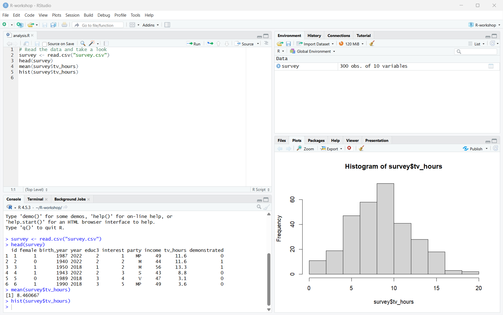

R Workshop 1: The Basics of R
read.csv()R is a programming language and a program for statistics. Instead of clicking in menus, you write commands, for example mean(income) to calculate a mean. Everything you do is therefore kept as text: you can rerun the whole analysis, find and correct a mistake, and show others exactly what you did.
RStudio is the program in which you write and run R code. RStudio uses R in the background and gathers your script, output, data and plots in one window. You need to install both: first R, then RStudio.
Both are free. You download R from cran.r-project.org and RStudio Desktop from posit.co/download/rstudio-desktop. Posit is the company that develops RStudio.
This is what RStudio looks like when a project is open and some code has been run. The window is divided into four panes.

12341 Source 2 Console 3 Environment 4 Files, Plots, Packages, Help
1 Source (top left) is the script: a text file in which you write the code in the order it should be run. You run the line where the cursor is with Ctrl+Enter (Mac: Cmd+Enter).
2 Console (bottom left) is where the code is run. The commands are shown in blue and the results are printed below them.
3 Environment (top right) shows the objects you have created, for example a dataset with 300 observations and 10 variables.
4 Files, Plots, Packages and Help (bottom right) show the files in the project folder, the plots you draw, the installed packages and the help pages.
On the right of this page there is an R panel that works like RStudio. R runs directly in your web browser, so you do not need to install anything to follow along. The panel has the same parts: Script, Console and the tabs Environment, Plots, Files and Help.
The code boxes on the slides have a Run button that runs the code in the console. With the copy button next to it you copy the code and can paste it into the script or into RStudio. If you have skipped slides or reloaded the page, Run earlier slides runs the code from all earlier slides. The panel is hidden with the arrows in the top right corner and shown again with the R button at the edge.
You will do the assignments in an online version of R that looks and works like this panel, with a script, a Run button, a console and a list of files. What you practise here therefore works the same way in the assignments and in RStudio on your own computer.
The console runs a command at once and shows the answer. It is good for trying something quickly, but what you only type in the console is not saved.
A script is a text file ending in .R, in which you write all the commands in the order they should be run. The script is your work: when you open it again, you can run the whole analysis from the beginning and get the same results. Always write your analysis in a script, and save it.
You run the line where the cursor is with Ctrl+Enter (Mac: Cmd+Enter) or with the Run button. If you select several lines, all of them are run, and you run the whole script with Ctrl+Shift+Enter. Try it in the panel: type 1 + 1 in the script and press Ctrl+Enter.
R reads and saves files in its working directory. In RStudio, the easiest way to keep everything for the course together is a project: choose File › New Project › New Directory › New Project, give the project a name, for example R-workshop, and choose where the folder should be. When the project is open, the project folder is the working directory.
Put data files and scripts in the project folder. R then finds the files by their name alone, and the project still works if you move the folder to another computer.
In the R panel here the working directory is already set up, and today’s data files are in it. You can see them under the Files tab.
We will use a fictional voter survey with 300 respondents. If you work in RStudio, download the file and put it in the project folder:
A CSV file is a plain text file in which each line is an observation and commas separate the variables. You read it with read.csv():
The line reads the file and saves its contents as a dataset called survey. The dataset now appears under Environment: 300 observations of 10 variables. We will come back to what the arrow <- does in a moment.
Before you calculate anything, it is a good idea to see what the dataset looks like: how many observations it has, what the variables are called and what values they take.
Each row in survey is a respondent and each column is a variable. The next slide explains the variables.
| Variable | Meaning |
|---|---|
id |
respondent number |
female |
1 = woman, 0 = man |
birth_year |
year of birth |
year |
year of the survey, 2018 or 2022 |
educ3 |
education: 1 = low, 2 = medium, 3 = high |
interest |
political interest: 1 = very interested … 5 = not at all interested |
party |
preferred party, or “No answer” |
income |
monthly income in thousands of SEK (missing for 20 people) |
tv_hours |
hours of TV per week |
demonstrated |
1 = has taken part in a demonstration, 0 = has not |
The parties: S = Social Democrats, M = Moderates, SD = Sweden Democrats, V = Left Party, C = Centre Party, MP = Green Party.
R can calculate directly. Write an expression and run it, and the answer is printed in the console. The [1] before the answer means that the answer starts with the first value, which becomes useful only when the answer contains many values.
Decimals are written with a point, 0.5, not with a comma. Spaces make no difference to R, but they make the code easier to read.
You save a value by giving it a name with the arrow <-, a less-than sign followed by a hyphen. This is called assignment, and the named value is called an object. In RStudio you type the arrow with Alt+minus (Mac: Option+minus).
The object appears under Environment as soon as it has been created. The same thing happened when you read the data: survey <- read.csv(...) saved the dataset as the object survey.
A name must start with a letter and may contain letters, digits, full stops and underscores. Spaces are not allowed, so write high_income or highincome. Avoid letters such as å, ä and ö in names, since they can cause problems on other computers.
R distinguishes between upper and lower case. Age and age are two different objects, and since we have only created age, R answers with an error:
Choose short names that say what the object contains, for example survey, mean_income or model1.
| Type | Example | Used for |
|---|---|---|
| number (numeric) | 3.5, 42 |
measurements, counts and 0/1 variables |
| text (character) | "SD", "No answer" |
categories written as words |
| logical | TRUE, FALSE |
the answer to a comparison |
Text is always written within quotation marks. Without them, R looks for an object with that name.
The difference matters: <- saves a value, == compares two values.
A vector is several values of the same type in a sequence. You create one with c(), where c stands for combine. Every variable in a dataset is a vector.
The square brackets [ ] pick out values by their position in the vector: age[2] is the second value and age[c(1, 3)] the first and the third.
A function does something with what you give it. What you give it is called arguments, which are written inside the parentheses and separated by commas. You have already used several functions: read.csv(), head() and mean().
Many arguments have names, like digits in round(). If you write out the name, the order does not matter, and the code becomes easier to read.
Every function has a help page that explains what it does, which arguments it takes and what it returns. You open the help page with a question mark before the function’s name:
The help page appears under the Help tab, both in RStudio and in the panel here. The sections Usage and Arguments show how the function is written and what the arguments do, and at the bottom there are often examples you can copy and run. The language is compact, but you quickly get used to it.
NA means that a value is missing, for example because the person did not answer the question. R is careful: if a variable contains a single NA, the mean is also NA.
na.rm = TRUE means “remove NA”: remove the missing values before calculating. In survey, income is missing for 20 people, so you need the argument every time you calculate with income.
A dataset in R is called a data frame. It is a table in which each row is an observation, here a respondent, and each column is a variable. The functions str() and summary() give an overview of all variables at once:
In RStudio you can click on survey under Environment, or run View(survey), to see the data as a spreadsheet. This also works in the panel: the data opens as a separate tab next to the script.
$With the dollar sign you take a variable out of a dataset. survey$income means “the variable income in the dataset survey”, and the result is a vector that you can calculate with.
If you write only income, R looks for an object of your own with that name, not for the variable in the dataset, and answers with an error. So always name the dataset: survey$income.
Square brackets also work for datasets. Inside the brackets the rows come first, then a comma, and the columns last. Leaving a place empty means “all”.
1:3 is a short way of writing c(1, 2, 3). The last line keeps the rows where the condition is true, which we will use a lot in the next workshop when we compare groups of respondents.
In the assignments the data are simulated and created from your name, so everyone gets slightly different data. You load the data with a function that the assignment names, for example:
The line runs the function and saves the result as a data frame with the name on the left, just like read.csv(). The functions exist only in the assignments and cannot be run here. What the variables mean is described in the assignment’s codebook.
A package is an add-on to R with more functions. The course uses the package stargazer to make tables. A package is installed once per computer and then loaded every time you start R:
In the R panel and in the assignments stargazer is already installed, so there library(stargazer) is enough. The message about how to cite the package is not an error.
Error messages are common and rarely mean that anything is broken. Read the message, check the spelling and run the lines in order from the top. The most common causes are:
object 'Survey' not found or could not find function "Mean".+ and waits for the rest; press Esc and correct the line.read.csv() first.survey have? What type is party? (Hint: str().)survey? Why is na.rm = TRUE needed?min().)median(). What does the argument na.rm do?
Comments
Everything after the
#sign on a line is a comment. R skips comments, so you can write whatever you like there. Use them to explain to yourself, and to anyone reading your script, what the code does and why.A good habit is a comment at the top of each part of the script, for example
# 1. Read the dataand# 2. Descriptive statistics. With Ctrl+Shift+C (Mac: Cmd+Shift+C) you turn the selected lines into comments, or remove the comment signs again.